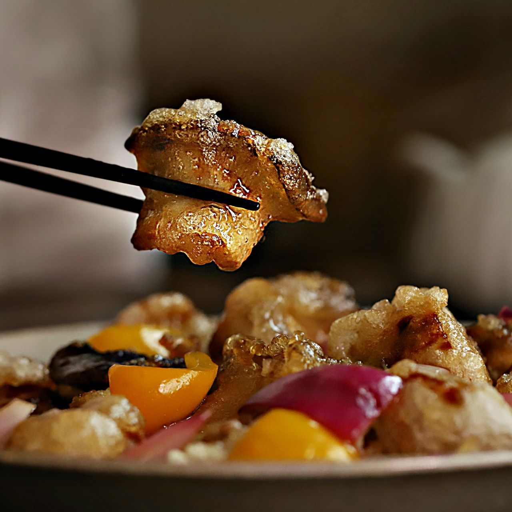

새송이 탕수
어? 고기보다 맛있네? 맛있는 채식 레시피 새송이 탕수 레시피를 소개합니다.
쫄깃한 식감이 매력적인 새송이를 튀겨 탕수 소스를 부어주면 고기보다 맛있는 새송이탕수가 완성돼요!
통통한 졸깃한 새송이버섯을 전분에 묻여 바삭하게 튀겨내면 또 다른 맛의 버섯티김이 만들어지죠.
그 위에 새콤달콤한 소스를 부어 새송이 탕수를 맛있게 즐겨보세요!

기본 재료 : 2~3인분 기준
- 새송이버섯 6개
- 파프리카(빨간색,노란색) 1/3개씩
- 적양파(양파로 대체 가능) 1/2개
- 식용유 4컵
- 4큰술
- 전분 1큰술
- 간장 1큰술
- 참기름 1큰술
- 소금 약간
소스 양념 재료 : 2~3인분 기준
- 진간장 2큰술
- 올리고당 3큰술
- 식초 3큰술
- 설탕 2큰술
- 물 1/2컵
조리 과정
- 1. 새송이버섯과 적양파, 파프리카 (빨간색,노란색)는 한입 크기로 잘라주세요.
- 2. 새송이버섯에 밑간 재료를 넣고 버무려주세요.
- 3. 볼에 물반죽 재료를 넣고 섞어주세요. 밑간한 새송이버섯에 전분 4큰술을 넣어 가볍게 섞어주세요.
- 4. 물반죽에 담가 튀김옷을 입힌 후 160도로 달군 기름에 바삭하게 튀겨주세요.
- 5. 팬에 소스양념을 넣은 후 바글바글 끓어오르면 적양파와 파프리카를 넣어 1분정도 끓여주세요. 전분물을 넣고 골고루 저어 농도가 걸쭉해지면 불을 꺼주세요.
- 6. 접시에 튀긴 새송이버섯을 담고 소스를 부어 맛있게 즐겨주세요.